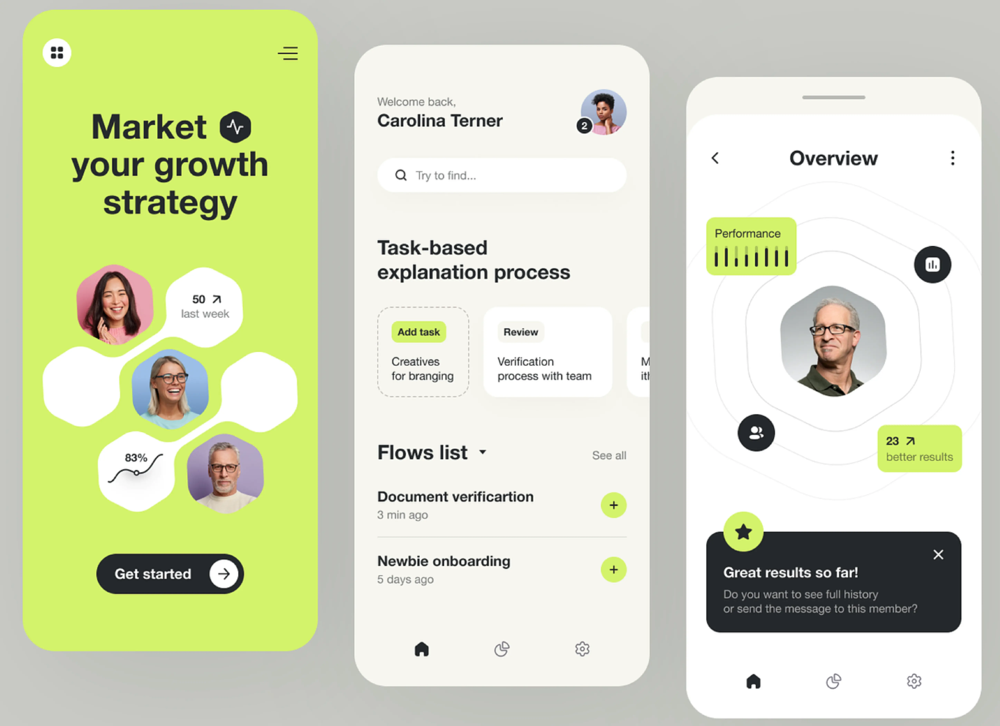

Screendesign Themen & Stile

UI-Stile im Screendesign
Im Rahmen dieses Projekts habe ich einen bestehenden Screen einer App oder Website analysiert, nachgebaut und anschließend in drei unterschiedlichen UI-Stilen neugestaltet. Ziel war es, verschiedene Designtrends zu untersuchen und deren Wirkung auf unterschiedliche Zielgruppen zu reflektieren. Neben der gestalterischen Umsetzung lag der Fokus auf der stilistischen Recherche, einer Zielgruppenanalyse sowie der fundierten Begründung des Designprozesses.
| Studienmodul | Gestaltung |
|---|---|
| Zeitraum | Oktober 2023 - Februar 2024 |
| Hochschule | Technische Hochschule Ingolstadt |
Konzentration
Screendesigns lassen sich häufig in verschiedene Stile, Themen und Trends unterteilen. Diese Veränderungen betreffen in erster Linie die visuelle, nicht jedoch die interaktive Komponente des Designs. Um dies zu veranschaulichen, wurde das ursprüngliche Screendesign zunächst auf seine interaktiven Elemente hin analysiert, reduziert und anschließend in verschiedene andere Themen und Stile umgewandelt.
Diese Version, die das Layout-Design und den tatsächlichen Content ohne das vollständige Screendesign enthält, dient als Grundversion für die nachfolgenden Screendesigns. Es werden keine grundlegenden Änderungen am Layout vorgenommen, sondern lediglich neue Screendesigns hinzugefügt.
Bauhaus
Bauhaus-Screendesign setzt auf klare, geometrische Formen und eine reduzierte Farbpalette. Primärfarben und einfache Formen wie Rechtecke und Kreise dominieren das Design, wobei Funktion und Ästhetik in Einklang stehen.
Glasmorphismus
Glasmorphismus nutzt transparente, verschwommene Elemente mit Hintergrundunschärfe, um einen glasähnlichen Effekt zu erzeugen. Es kombiniert sanfte Farben und weiche Kanten, wodurch das Design modern und leicht wirkt, während der Fokus auf Transparenz und Tiefe liegt.